The challenge
A major quick-service restaurant chain ran its safety incident and hazard reporting on a digital platform. The system was built on a single assumption: frontline team members would log incidents directly into the platform. Reality told a different story — and where the two diverged, people stopped doing the right thing and the organisation lost the data it needed to keep people safe.
Four patterns surfaced in the first week: manager mediation (people preferred telling their manager over logging in); a black-hole effect (reports disappeared without visible feedback, creating perceived futility); data flooding (70% of logged incidents were paper cuts — the system drowning in low-value data); and access barriers (password friction, phone bans and form complexity creating cascading barriers).
Five stakeholder types, one reporting system
The research had to capture five distinct perspectives on the same incident:
- Team members — frontline workers experiencing incidents daily
- Managers (RGMs/ARMs) — the gatekeepers who actually file most reports
- Safety captains / area safety leaders — regional oversight and compliance
- Safety team — system-level data quality and pattern intelligence
- Franchisees — business owners balancing safety with operations
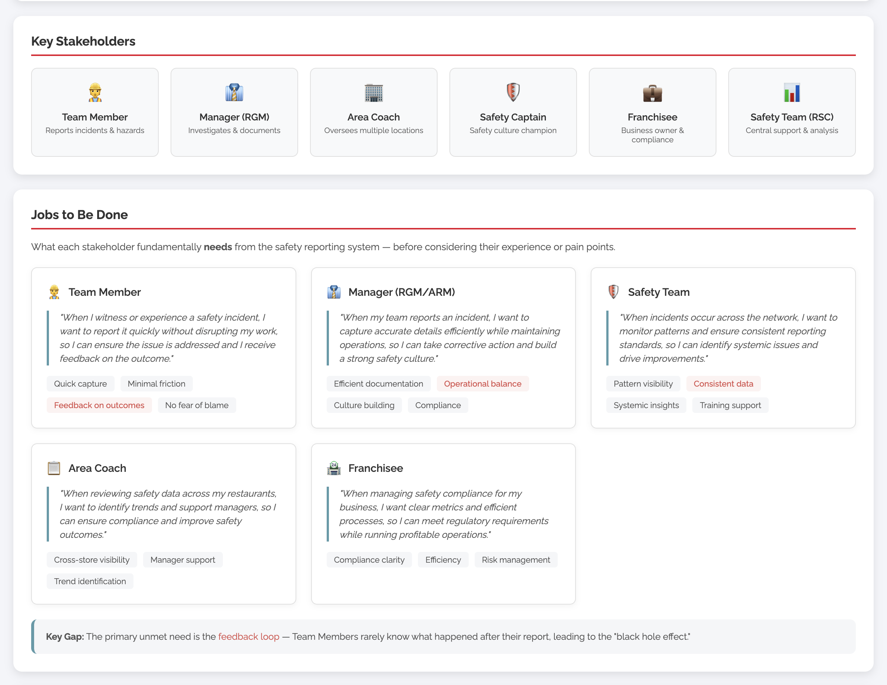
Every one of these roles had a different mental model of what a report was for: for the team member it was a risk, for the manager an obligation, for the safety captain a pattern, for the franchisee a liability. The system served none of them well enough to overcome the friction of using it.
The approach: AI-augmented mixed methods
The core methodological idea: the researcher directs strategy, conducts every interview and makes every judgment call; AI handles synthesis at scale. Rather than a month of manual coding, autonomous agents processed transcripts as data arrived — extracting, categorising and cross-referencing insights while interviews were still happening. The rigour of traditional qualitative research, without the bottleneck.
Multi-modal data collection
The five-layer research pipeline
Human-led stages (research design, framing, interview design, data collection) integrate with AI-assisted stages (processing, analysis) and the deliverable layer, so nothing is automated that needs a human decision:
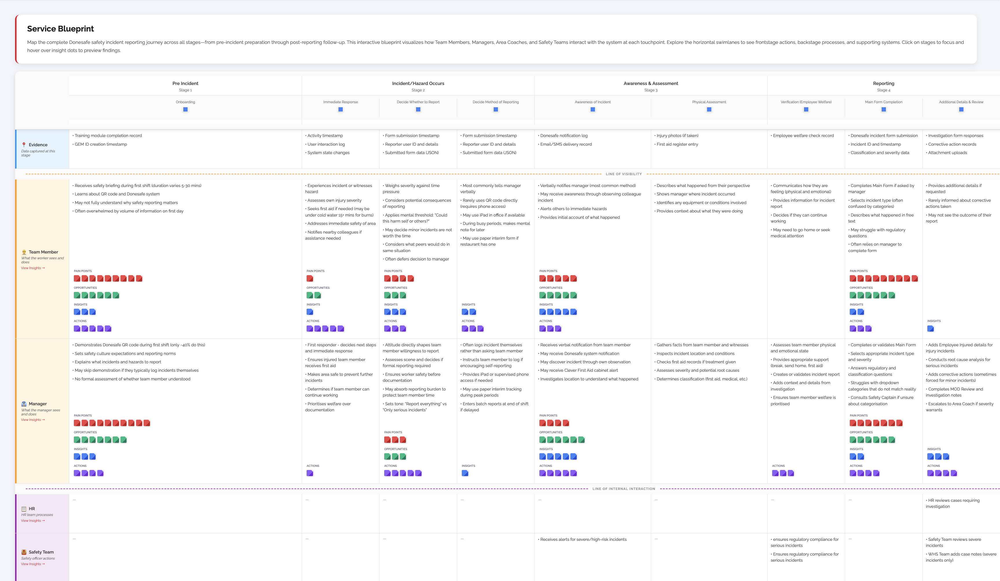
Data safeguards as a design constraint
Incident reports are sensitive material, so ethics was engineered into the pipeline rather than assumed:
- De-identification first — names, store locations and identifying detail stripped using local LLMs before anything reached a cloud model
- Enterprise-approved models only — no shadow AI; only vetted models
- Data minimisation — only insight-relevant content extracted; full transcripts never uploaded
- Local processing for sensitive operations — PII removal ran entirely on local infrastructure
The evidence
Every insight was automatically classified into one of seven types, then triangulated against surveys and observation before it earned the label of finding.
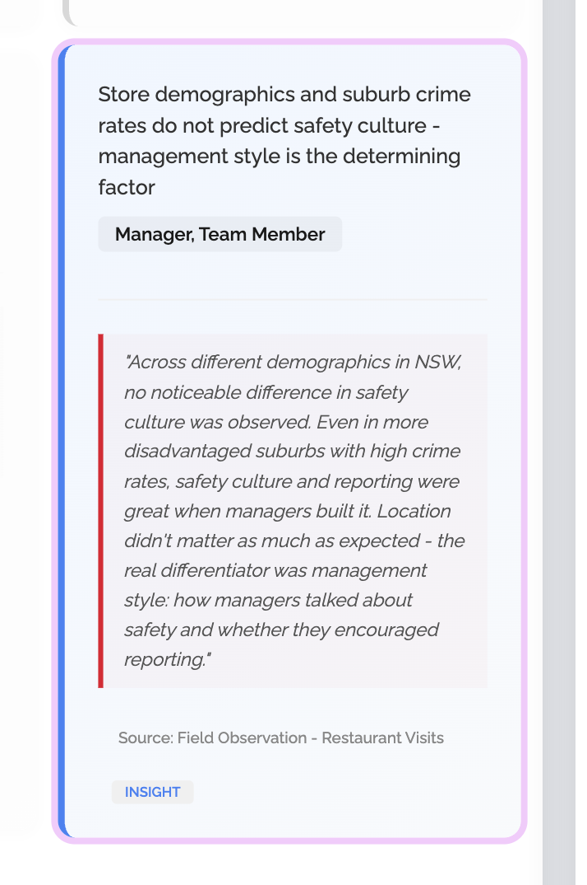
Theme distribution — the first signal
The auto-classification surfaced something manual coding had hidden in prior cycles: 49.6% of insights were about culture and communication, not the system. System design was 20.7%, process and procedure 16.0%, policy and compliance 8.2%. A technology-only fix could not address half the problem.
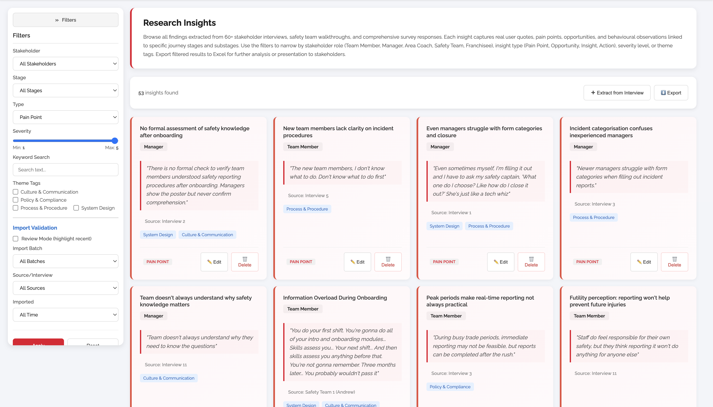
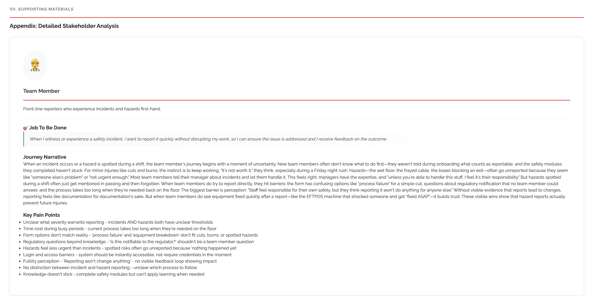
Key findings
Four patterns explained most of the gap between the system and reality. Each is a service design insight, not a usability bug.
Finding 1 — The manager mediation pattern
Despite the system assuming direct team member input, managers are the primary reporting interface. People reported to a person, not a platform.
“I just tell my manager when something happens. They know how to put it in the system.”
— Team member
Implication: the redesign must account for the mediated workflow rather than fight it — make the manager capture path deliberate, trained and forgiving, not an unplanned workaround.
Finding 2 — The futility loop
When reports disappear without visible outcomes, people develop learned helplessness about reporting. The loop is fatal to a reporting culture: no feedback → less reporting → worse data → less feedback.
“You put something in and never hear back. You start to wonder why you bother.”
— Safety captain
Implication: visible feedback loops — a report status, an acknowledgement, a cross-reference to the action it produced — are as important as the form itself.
Finding 3 — The 15-minute gap (emergency paradox)
Serious incidents rupture the linear reporting timeline. A burn that requires 15 minutes under cold water cannot be paused for a form. Immediate reporting is impossible when emergency response is the priority.
Implication: the system must accommodate delayed reporting for serious incidents without treating it as non-compliance. This pattern — rigid rules meeting operational reality — recurs across regulated environments, from safety reporting to financial services.
Finding 4 — The “worth it” threshold
Users apply a private mental filter: is this worth the effort? High-frequency, low-severity incidents flooded the system while medium-severity incidents went unreported — precisely the class that matters most.
Implication: the reporting path must differentiate by severity — quick capture for minor incidents, appropriate depth for serious ones — and the threshold must be declared, not left to individuals to guess.
Culture over system. Nearly 50% of insights were about culture and communication, not system design. Technology fixes alone cannot solve the reporting problem. The redesign is therefore three quarters human systems design — ritual, training, feedback, language — and one quarter interface.
From insights to action
The research directly informed seven prototypes, progressing from low-fidelity wireframes through mid-fidelity flows to high-fidelity interactive prototypes validated with stakeholders and the platform consultant.
- Incident form redesign — severity-first approach; low to high-fidelity interactive prototype. Severity-first reduces decision paralysis.
- Manager onboarding checklist — standardised QR-code training. Addresses inconsistent training barriers.
- Manager daily check-in card — systematic incident capture; wireframe to mid-fidelity validated prototype. Integrates into existing shift handover rituals.
- Report threshold quick reference — decision support. Addresses the “worth it” threshold finding.
- Incident type redesign — severity + mechanism split. Separating “what” from “how bad” reduces cognitive load.
- Stakeholder stories — seven documented journeys. Builds empathy and alignment across the organisation.
- Knowledge base articles — 25 support resources. Addresses phone/keyboard barriers identified in the research.
Strategic recommendations
- Align system design with the manager-mediated reality — redesign the workflow to reflect how incidents are actually captured
- Implement visible feedback loops — close the reporting cycle so reporters see outcomes
- Differentiate reporting paths by severity — quick capture for minor, appropriate depth for serious
- Standardise manager training on QR codes — eliminate cascading access barriers
- Resolve phone-ban policy conflicts — reporting a hazard must never require a device the workplace rules prohibit
Design system and product work
To make the redesign testable rather than descriptive, I rebuilt the reporting system as a component library with a token layer extracted from the platform’s own design language (a brand sans with its own display face; the mint/teal/charcoal system) and re-tuned where accessibility required it. Every state is represented, including the ones the old system never showed — error, focus, recovery — rendered as living previews and staged for the Figma pipeline; the workforce platform case (article 52) documents the same pipeline.
Token layer
| Token group | Values | Where used |
|---|---|---|
| Type | brand sans (extracted) with a distinctive display face; IBM Plex Mono (severity codes, counts) | Type scale 28 / 22 / 18 / 16 / 14 / 13 / 12 / 11 px |
| Neutrals | bg #f6f5f2; paper #ffffff; ink #17181a; muted #5a5e63; line #e2e2e0 | Surfaces, text, rules |
| Brand layer | mint #3cce93; teals #053745 / #074e62 / #206072; charcoal #313e48; blue #097abf | Brand accents, headers, links. Mint used for fills and icons only — 2.1:1 on white fails AA as text |
| Severity colours | critical #e91d36 (fill) / #b42318 (text); serious #8a5a00; notable #097abf; minor #5a5e63 | Severity chips — always with text label and icon, never colour alone |
| Spacing | 4 px grid (4 / 8 / 12 / 16 / 20 / 24 / 28 / 32 / 40 / 48) | All layout and component padding |
| Geometry | radius 5 px; control heights 32 / 36 / 40 px; touch targets 44 px on mobile | Cards, inputs, buttons, mobile controls |
| Focus | outline 3 px #097abf, offset 1 px | Keyboard and touch focus visible everywhere |
Brand palette and typefaces extracted from the platform’s public site; mapped to AA-safe text tokens.
Component library and states
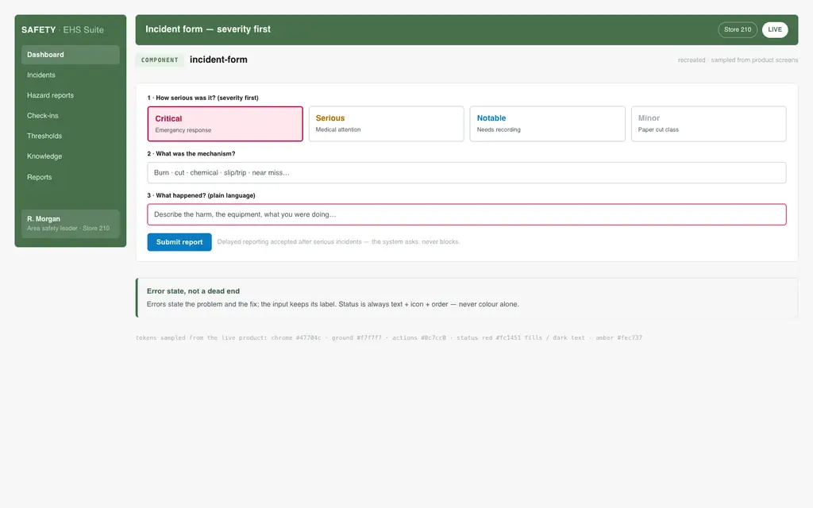
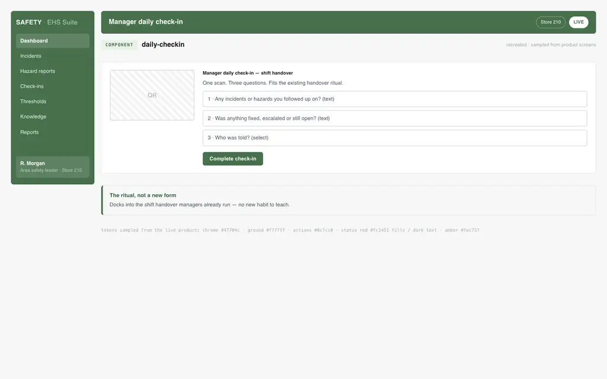
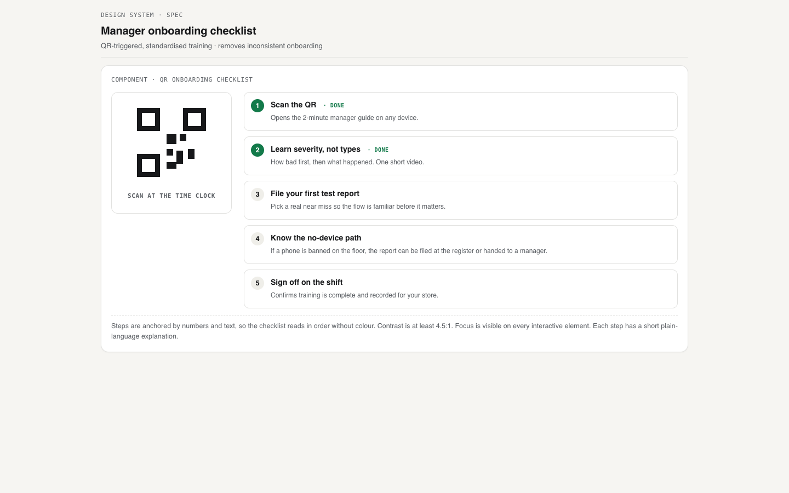
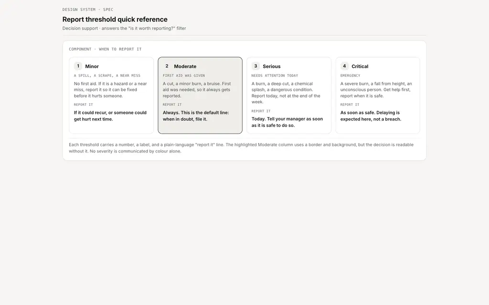
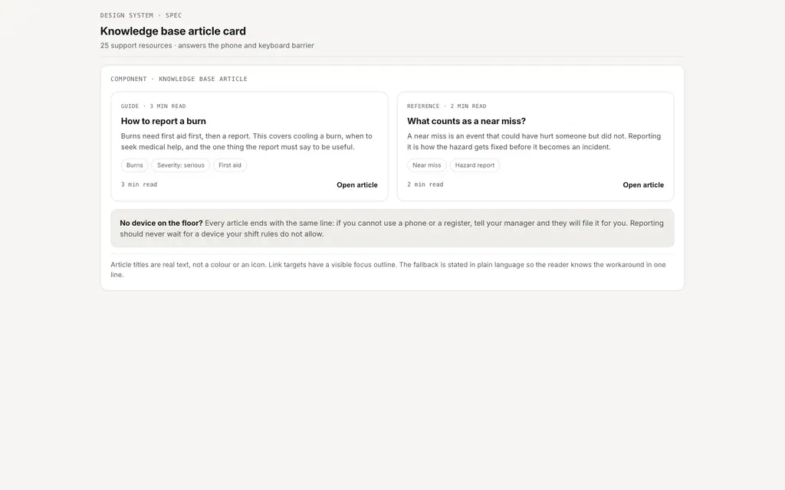
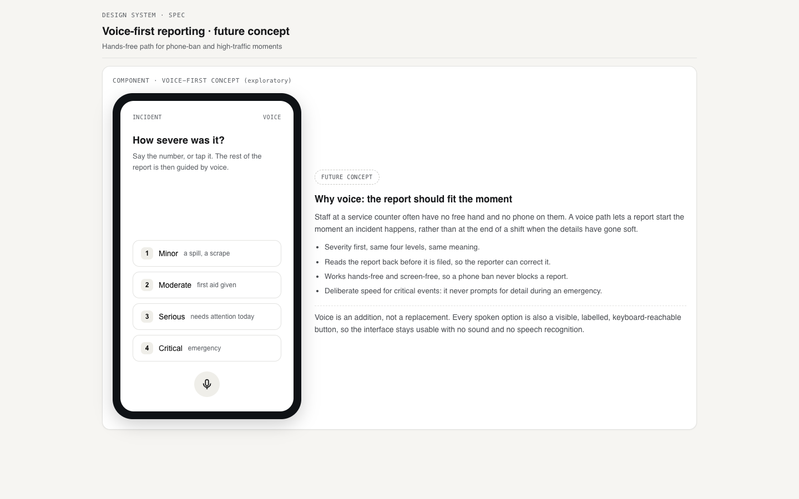
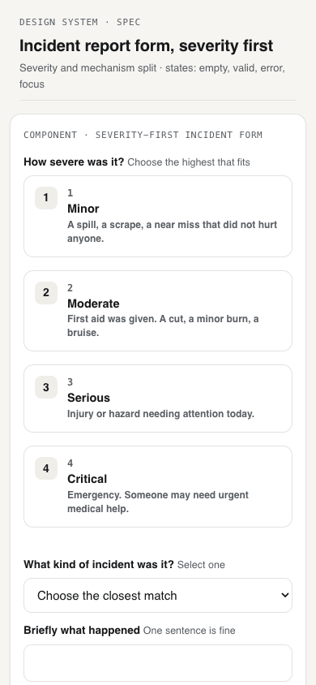
Interactive prototype
Results
The work was reviewed by five internal teams — HR, leadership, IT, people partnering and workplace health and safety — plus external safety consultants. Multiple recommendations are in active implementation, and the journey mapping platform remains a living tool for continued insight discovery.
| Dimension | Traditional approach | AI-augmented approach |
|---|---|---|
| Interview processing | Days per transcript | Real-time AI extraction |
| Insight categorisation | Manual coding | AI auto-classification (7 types, 4 themes) |
| Journey map creation | Weeks of synthesis | AI auto-populated as data arrived |
| Cross-source validation | One-off analysis | Continuous pattern recognition |
| Iteration cycles | 2-3 major revisions | Unlimited AI-accelerated iteration |
| Documentation | Static deliverables | Living AI-powered platform |
Reflection
AI amplifies, humans direct
AI processed 60+ transcripts in real time and auto-categorised 232 insights. Every insight still required human judgement to validate, contextualise and connect to action. It made me faster; it did not replace the thinking.
Culture beats technology
The biggest finding — half the insight base was culture, not systems — is the reminder that the best-designed software cannot overcome organisational resistance. The AI-scaled analysis surfaced the theme distribution that manual coding could have missed.
Build tools to think better
Building the AI-powered platform was not a side project. The pipeline itself became the analysis: real-time extraction, categorisation and cross-referencing changed how patterns emerged and how fast I could follow them.
Let the data lead
I expected system usability issues. Cross-source analysis revealed the real problem was a misalignment between how the system was designed and how work actually happens. The redesign followed the evidence, and the evidence pointed at the human workflow and the culture around it.
The reporting form was never the deliverable. The redesign of the human system around it was: manager mediation formalised as a designed path, feedback loops closed, severity paths differentiated, training standardised, policy contradictions named and resolved — and a reporting culture rebuilt on trust.